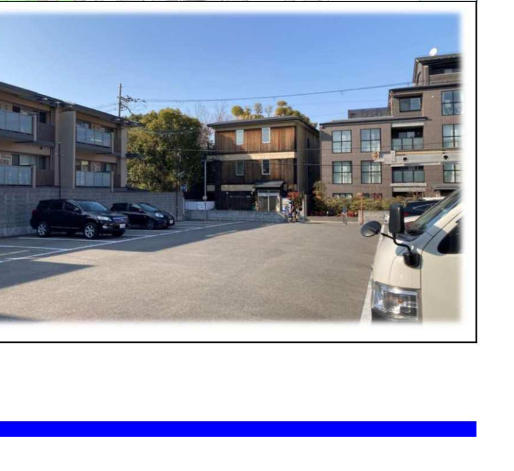
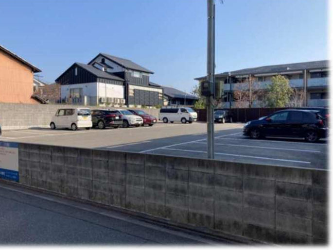
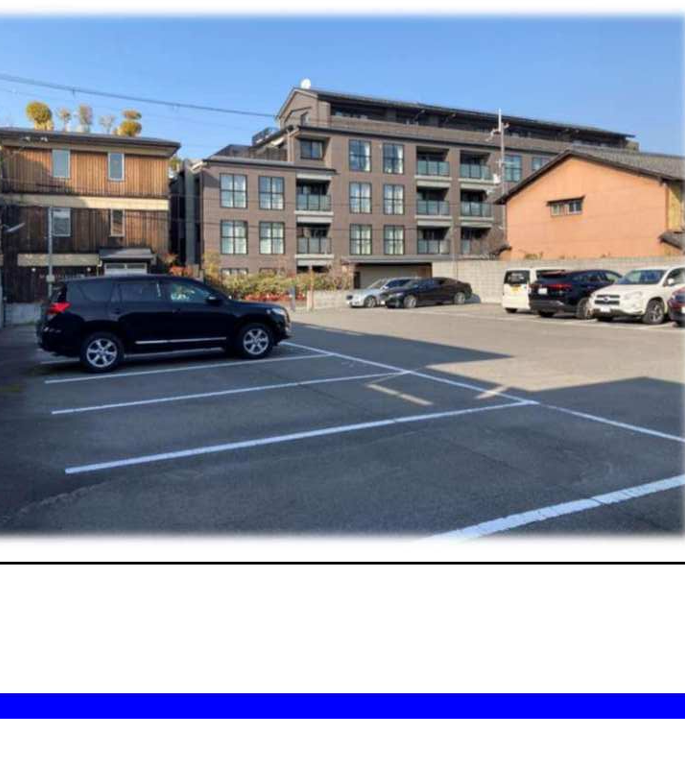
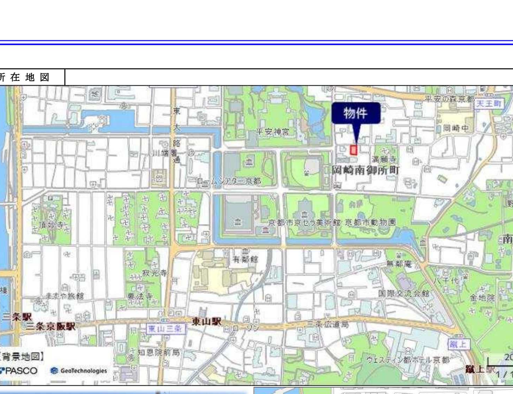
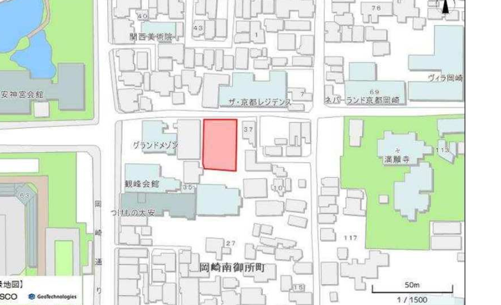

平安神宮まで徒歩4〜5分。
南禅寺まで徒歩11〜15分。
地下鉄東西線「東山」駅まで徒歩14分。
ここは京都市が最も厳しい景観規制を課すエリアのひとつ。
高さ10m、和風外観、瓦屋根――
それでも、この場所に立つ意味がある。
701.42㎡（212.17坪）／総額7億5,000万円
現況：駐車場（25台分）
この土地は「岡崎・南禅寺特別修景地域」に指定されている。平成19年9月3日、京都市告示第215号により指定された61地域のうち19番目。京都市公式資料は、この地域の趣旨をこう記す――「東山の借景空間の保全を図るため、建築物は和風外観の度合いを高め、京都らしい雰囲気を保持すること」。
木造2階建て、またはRC地下1階+地上2階が実現可能な上限。東山の稜線を隠さないための制限。
敷地の6割は建物を建てない――庭園・余白として残す設計が前提になっている。
切妻・寄棟・入母屋のいずれか。屋根は濃い灰色・黒色、外壁は薄茶色系。京都市が定めるマンセル値に基づく。
高木1本＋低木2本／10㎡が目安。建物だけでなく、緑もこの土地の一部として設計に組み込まれる。
127坪の邸宅と、127坪の庭。東山を借景にした日本庭園が、法的に実現できる規模で残されている。
南禅寺界隈は、明治以降「所有すること自体がステータス」となった土地。政財界の巨頭たちが、この一帯に別荘を構えてきた。
平安遷都1100年を記念して平安神宮が創建。同年、隣接地で開催された内国勧業博覧会には約113.7万人が来場した。跡地は1904年、岡崎公園として開設される。
出典：Wikipedia「平安神宮」「岡崎公園（京都市）」山縣有朋が造営。庭園は七代目小川治兵衛の作。1903年には「無鄰菴会議」（山縣・伊藤博文・桂太郎・小村寿太郎）の舞台となり、1951年に国の名勝指定を受けた。
出典：無鄰菴公式・京都市公式サイト二代目野村徳七（野村證券・大和銀行創業者）が築造。小川治兵衛・保太郎親子が作庭を手がけた。2006年、国の重要文化財に指定。現在も野村ホールディングスが所有し、原則非公開。
出典：文化遺産オンライン南禅寺界隈別荘群の現所有者は、野村ホールディングス・ニトリホールディングス・パナソニックなど、日本を代表する企業・財閥が中心。海外ではラリー・エリソン氏（オラクル共同創業者）が南禅寺境内の「何有荘」を取得した例もある。
出典：South China Morning Post／マネーポストWEB現況は駐車場。だが、それは「まだ何も建っていない余白」でもある。


感情の話だけではない。京都市の公示地価データと比較しても、この土地の価格には根拠がある。
| 比較対象 | 坪単価 | 備考 |
|---|---|---|
| 本物件 | 約353.5万円 | 701.42㎡（212坪）／総額7.5億円 |
| 岡崎徳成町（公示地価・2026年） | 約204万円 | 国交省地価公示 確認済み |
| 岡崎円勝寺町（公示地価・2026年） | 約193万円 | 国交省地価公示 確認済み |
| 岡崎北御所町（公示地価・2025年） | 約139万円 | 国交省地価公示 確認済み |
| 左京区全体平均（2025年） | 約103〜107万円 | tochidai.info確認済み（サイト更新差により幅あり） |
本物件の坪単価は周辺公示地価の約1.7〜1.8倍。この差は、風致地区・特別修景地域という規制が担保する希少性のプレミアムと解釈できる。
法規制を「制限リスト」ではなく、体験として確かめてみてほしい。


南禅寺界隈という立地、風致地区という制約、その両方をご理解いただいた上でご検討いただきたい土地です。
※このフォームは構想版のデモです。実運用にはGoogleフォーム等との連携が必要です。